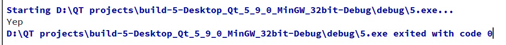

QT NEW (3)
QT NEW 3
信号与槽的基础概念
我们现在开始关联我们的行为和效果！比若说：我希望点击按钮后就帮我关闭窗口！于是
这就是我们分解完后发现就是这样的，现在开始关联他们：
英语里：connect就是连接的，结合上图发现，想要表达一个链接，无非就是：
connect(sender, sendSignal, receiver, slogAsActionReact) 注意了：注意！我们点击按钮，不一定是去关闭窗口，而窗口关闭了不一定时我点击了按钮导致的
于是，信号槽的优点就是：松散耦合的！他们之间本来没啥关联！但是现在我们直接用connect函数来耦合在一起！
QT里，就是connect函数完成我们的工作！先来看发送者：按钮！那信号呢？
于是找到一个信号clicked.
所以传入一个函数的地址！&QPushButton::clicked
接收者同理！：
connect(mine, &QPushButton::clicked,this,&QWidget::close); 这一思想十分重要！还是需要好好消化！
现在尝试自己来书写两个类，来建立相应的关系！
现在构建程序如下：
在最大工程文件之下添加两个类！，首先是 Teacher类。 随后是学生类。假设这一场景！老师要求学生交作业！学生听到老师的要求来拿出作业，老师看到学生拿出作业之后再上前收取。这个行为我们使用 QT 的槽与信号来完成我们的实现。
选择新建两个类： Student 和 Teacher. 注意到为了能够使用 QT系统的一些性质，有必要来选择继承QT类。
当我们完成了新建，马上就发现，它同我们所想象的不太一样！
#ifndef TEACHER_H
#define TEACHER_H
#include <QObject>
class Teacher : public QObject // QObject 是 Teacher 的一个基类
{
Q_OBJECT // 这是QObject宏，声明启用Slot - Signals关系的
public:
explicit Teacher(QObject *parent = nullptr);
// 只有在有 Q_OBJECT下才生效
signals:
// 我们在这里书写 signals 作为信号函数
public slots:
// 我们在这里书写 slots 作为响应信号的槽函数
};
#endif // TEACHER_H 注意到我们在这里完成槽函数和信号函数的书写！
以及这里需要提醒的是：槽函数在这里是一个实现的占位函数，这是在底层的文件中，QT为我们实现了函数了，不要在定义实现文件里再次定义信号函数，否则会发生报错。
但是，槽函数需要实现，这是需要在实现文件里自己重写的！
void student::reactions(){
qDebug() << "Yep, I think I will help you!";
} 书写完响应之后，我们现在可以来干活了（在Widget.cpp）
#include "widget.h"
#include"student.h"
#include"teacher.h"
Widget::Widget(QWidget *parent)
: QWidget(parent)
{
Teacher* t = new Teacher(this);
student* s = new student(this);
// 这里是链接信号和槽，但是这又这样是不行的，英文不是所有的这个函数都是信号，只有当我们认为指定他是信号的时候才需要出发槽函数
connect(t,&Teacher::announceHungry,s,&s->reactions);
// 而emit就是声命这是这是一个信号函数且需要调用s->reactions
emit t->announceHungry();
}
Widget::~Widget()
{
}
这样，只要我们一开始运行程序，就会发现

嗯，打印了（如果跑的是我的那个demo就是Yep, I think I will help you!）
槽函数的重载版本
下面，我们进一步的探索可以重载版本的槽函数
以上一小节的场景为例子，加上槽函数的重载版本！
// in .h
slots:
void reactions(QString s);
// .cpp
void student::reactions(QSrting s){
qDebug() << "yep, I think it is" << s;
} 现在，注释掉原先的emit 就可以发现智能提示上函数有重载版本！
但是，当我们直接单击运行的时候，QT报错了！原因很简单！QT不知道你要那个回应！于是，我们转向传专门到具体的函数的指针！也就是直接传重载版本的函数指针！
但是，我们的信号来源信息是需要从信号函数那里来的，于是还要重载Signal函数
//.h
signal:
void announceHungry(QString s);
// .cpp
void Teacher::announceHungry(QString s);// 仍然不实现！ 现在，告诉引发的信号是来自：
emit t->announceHungry("111"); // 从这里编译器判断函数类型void (Teacher::*StringOne)(QString) = &Teacher::announceHungry;
void (student::*reacOne)(QString) = &student::reactions;
connect(t,StringOne,s,reacOne);令人恼火的是：
马上强迫症发现了：不对啊，我们的111不应该打印“” 啊！，这是因为类型是QString导致的，这个时候只要我们进行转化就好了
qDebug() << s.toUtf8().data()
// QString -> ByteArray -> const char*高级一点的信号与槽
现在，让我们点击按钮，连续的触发事件来让样例复杂起来。
信号与槽的一个重要的要求就是信号和槽的函数的参数必须一致(有参的信号和QPushButton的clicked信号的参数不匹配就会编译报错)，于是，包装一个Emit函数
void Widget::Emit()
{
// 预先在Widget里添加成员t，并且初始化
Emit t->announcement("111")
} 现在，开始关联：
QPushButton* btn = new QPushButton("Press me",this);
btn->move(200,200);
connect(btn,QPushButton::clicked,this,&Widget::Emit);
void (Teacher::*StringOne)(QString) = &Teacher::announceHungry;
void (student::*reacOne)(QString) = &student::reactions;
connect(t,StringOne,s,reacOne);
对了，信号也可以来连接信号，就是：
断开链接
disconnect(s1,signalF,sloter,slotF);